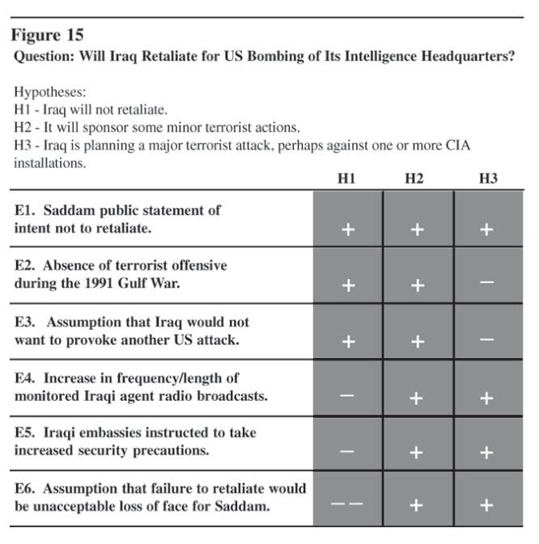

Chapter 8 Analysis of Competing Hypotheses
Analysis of competing hypotheses, sometimes abbreviated ACH, is a tool to aid judgment on important issues requiring careful weighing of alternative explanations or conclusions. It helps an analyst overcome, or at least minimize, some of the cognitive limitations that make prescient intelligence analysis so difficult to achieve.
ACH is an eight-step procedure grounded in basic insights from cognitive psychology, decision analysis, and the scientific method. It is a surprisingly effective, proven process that helps analysts avoid common analytic pitfalls. Because of its thoroughness, it is particularly appropriate for controversial issues when analysts want to leave an audit trail to show what they considered and how they arrived at their judgment.85
* * * * * * * * * * * * * * * * * * *
When working on difficult intelligence issues, analysts are, in effect, choosing among several alternative hypotheses. Which of several possible explanations is the correct one? Which of several possible outcomes is the most likely one? As previously noted, this book uses the term “hypothesis” in its broadest sense as a potential explanation or conclusion that is to be tested by collecting and presenting evidence.
Analysis of competing hypotheses (ACH) requires an analyst to explicitly identify all the reasonable alternatives and have them compete against each other for the analyst’s favor, rather than evaluating their plausibility one at a time.
The way most analysts go about their business is to pick out what they suspect intuitively is the most likely answer, then look at the available information from the point of view of whether or not it supports this answer. If the evidence seems to support the favorite hypothesis, analysts pat themselves on the back (“See, I knew it all along!”) and look no further. If it does not, they either reject the evidence as misleading or develop another hypothesis and go through the same procedure again. Decision analysts call this a satisficing strategy. (See Chapter 4, Strategies for Analytical Judgment.) Satisficing means picking the first solution that seems satisfactory, rather than going through all the possibilities to identify the very best solution. There may be several seemingly satisfactory solutions, but there is only one best solution.
Chapter 4 discussed the weaknesses in this approach. The principal concern is that if analysts focus mainly on trying to confirm one hypothesis they think is probably true, they can easily be led astray by the fact that there is so much evidence to support their point of view. They fail to recognize that most of this evidence is also consistent with other explanations or conclusions, and that these other alternatives have not been refuted.
Simultaneous evaluation of multiple, competing hypotheses is very difficult to do. To retain three to five or even seven hypotheses in working memory and note how each item of information fits into each hypothesis is beyond the mental capabilities of most people. It takes far greater mental agility than listing evidence supporting a single hypothesis that was pre-judged as the most likely answer. It can be accomplished, though, with the help of the simple procedures discussed here. The box below contains a step-by-step outline of the ACH process.
Step 1
Identify the possible hypotheses to be considered. Use a group of analysts with different perspectives to brainstorm the possibilities.
Psychological research into how people go about generating hypotheses shows that people are actually rather poor at thinking of all the possibilities.86 If a person does not even generate the correct hypothesis for consideration, obviously he or she will not get the correct answer.
Step-by-Step Outline of Analysis of Competing Hypotheses
1. Identify the possible hypotheses to be considered. Use a group of analysts with different perspectives to brainstorm the possibilities. 2. Make a list of significant evidence and arguments for and against each hypothesis. 3. Prepare a matrix with hypotheses across the top and evidence down the side. Analyze the “diagnosticity” of the evidence and arguments— that is, identify which items are most helpful in judging the relative likelihood of the hypotheses. 4. Refine the matrix. Reconsider the hypotheses and delete evidence and arguments that have no diagnostic value. 5. Draw tentative conclusions about the relative likelihood of each hypothesis. Proceed by trying to disprove the hypotheses rather than prove them. 6. Analyze how sensitive your conclusion is to a few critical items of evidence. Consider the consequences for your analysis if that evidence were wrong, misleading, or subject to a different interpretation. 7. Report conclusions. Discuss the relative likelihood of all the hypotheses, not just the most likely one. 8. Identify milestones for future observation that may indicate events are taking a different course than expected.
It is useful to make a clear distinction between the hypothesis generation and hypothesis evaluation stages of analysis. Step 1 of the recommended analytical process is to identify all hypotheses that merit detailed examination. At this early hypothesis generation stage, it is very useful to bring together a group of analysts with different backgrounds and perspectives. Brainstorming in a group stimulates the imagination and may bring out possibilities that individual members of the group had not thought of. Initial discussion in the group should elicit every possibility, no matter how remote, before judging likelihood or feasibility. Only when all the possibilities are on the table should you then focus on judging them and selecting the hypotheses to be examined in greater detail in subsequent analysis.
When screening out the seemingly improbable hypotheses that you do not want to waste time on, it is necessary to distinguish hypotheses that appear to be disproved from those that are simply unproven. For an unproven hypothesis, there is no evidence that it is correct. For a disproved hypothesis, there is positive evidence that it is wrong. As discussed in Chapter 4, “Strategies for Analytical Judgment,” and under Step 5 below, you should seek evidence that disproves hypotheses. Early rejection of unproven, but not disproved, hypotheses biases the subsequent analysis, because one does not then look for the evidence that might support them. Unproven hypotheses should be kept alive until they can be disproved.
One example of a hypothesis that often falls into this unproven but not disproved category is the hypothesis that an opponent is trying to deceive us. You may reject the possibility of denial and deception because you see no evidence of it, but rejection is not justified under these circumstances. If deception is planned well and properly implemented, one should not expect to find evidence of it readily at hand. The possibility should not be rejected until it is disproved, or, at least, until after a systematic search for evidence has been made and none has been found.
There is no “correct” number of hypotheses to be considered. The number depends upon the nature of the analytical problem and how advanced you are in the analysis of it. As a general rule, the greater your level of uncertainty, or the greater the policy impact of your conclusion, the more alternatives you may wish to consider. More than seven hypotheses may be unmanageable; if there are this many alternatives, it may be advisable to group several of them together for your initial cut at the analysis.
Step 2
Make a list of significant evidence and arguments for and against each hypothesis.
In assembling the list of relevant evidence and arguments, these terms should be interpreted very broadly. They refer to all the factors that have an impact on your judgments about the hypotheses. Do not limit yourself to concrete evidence in the current intelligence reporting. Also include your own assumptions or logical deductions about another person’s or group’s or country’s intentions, goals, or standard procedures. These assumptions may generate strong preconceptions as to which hypothesis is most likely. Such assumptions often drive your final judgment, so it is important to include them in the list of “evidence.”
First, list the general evidence that applies to all the hypotheses. Then consider each hypothesis individually, listing factors that tend to support or contradict each one. You will commonly find that each hypothesis leads you to ask different questions and, therefore, to seek out somewhat different evidence.
For each hypothesis, ask yourself this question: If this hypothesis is true, what should I expect to be seeing or not seeing? What are all the things that must have happened, or may still be happening, and that one should expect to see evidence of? If you are not seeing this evidence, why not? Is it because it has not happened, it is not normally observable, it is being concealed from you, or because you or the intelligence collectors have not looked for it?
Note the absence of evidence as well as its presence. For example, when weighing the possibility of military attack by an adversary, the steps the adversary has not taken to ready his forces for attack may be more significant than the observable steps that have been taken. This recalls the Sherlock Holmes story in which the vital clue was that the dog did not bark in the night. One’s attention tends to focus on what is reported rather than what is not reported. It requires a conscious effort to think about what is missing but should be present if a given hypothesis were true.
Step 3
Prepare a matrix with hypotheses across the top and evidence down the side. Analyze the “diagnosticity” of the evidence and arguments- that is, identify which items are most helpful in judging the relative likelihood of alternative hypotheses.
Step 3 is perhaps the most important element of this analytical procedure. It is also the step that differs most from the natural, intuitive approach to analysis, and, therefore, the step you are most likely to overlook or misunderstand.
The procedure for Step 3 is to take the hypotheses from Step 1 and the evidence and arguments from Step 2 and put this information into a matrix format, with the hypotheses across the top and evidence and arguments down the side. This gives an overview of all the significant components of your analytical problem.
Then analyze how each piece of evidence relates to each hypothesis. This differs from the normal procedure, which is to look at one hypothesis at a time in order to consider how well the evidence supports that hypothesis. That will be done later, in Step 5. At this point, in Step 3, take one item of evidence at a time, then consider how consistent that evidence is with each of the hypotheses. Here is how to remember this distinction. In Step 3, you work across the rows of the matrix, examining one item of evidence at a time to see how consistent that item of evidence is with each of the hypotheses. In Step 5, you work down the columns of the matrix, examining one hypothesis at a time, to see how consistent that hypothesis is with all the evidence.
To fill in the matrix, take the first item of evidence and ask whether it is consistent with, inconsistent with, or irrelevant to each hypothesis. Then make a notation accordingly in the appropriate cell under each hypothesis in the matrix. The form of these notations in the matrix is a matter of personal preference. It may be pluses, minuses, and question marks. It may be C, I, and N/A standing for consistent, inconsistent, or not applicable. Or it may be some textual notation. In any event, it will be a simplification, a shorthand representation of the complex reasoning that went on as you thought about how the evidence relates to each hypothesis.
After doing this for the first item of evidence, then go on to the next item of evidence and repeat the process until all cells in the matrix are filled. Figure 15 shows an example of how such a matrix might look. It uses as an example the intelligence question that arose after the US bombing of Iraqi intelligence headquarters in 1993: Will Iraq retaliate? The evidence in the matrix and how it is evaluated are hypothetical, fabricated for the purpose of providing a plausible example of the procedure. The matrix does not reflect actual evidence or judgments available at that time to the US Intelligence Community.

Question: Will Iraq Retaliate for US Bombing of Its Intelligence Headquarters?
The matrix format helps you weigh the diagnosticity of each item of evidence, which is a key difference between analysis of competing hypotheses and traditional analysis. Diagnosticity of evidence is an important concept that is, unfortunately, unfamiliar to many analysts. It was introduced in Chapter 4, and that discussion is repeated here for your convenience.
Diagnosticity may be illustrated by a medical analogy. A high-temperature reading may have great value in telling a doctor that a patient is sick, but relatively little value in determining which illness a person is suffering from. Because a high temperature is consistent with so many possible hypotheses about a patient’s illness, this evidence has limited diagnostic value in determining which illness (hypothesis) is the more likely one.
Evidence is diagnostic when it influences your judgment on the relative likelihood of the various hypotheses identified in Step 1. If an item of evidence seems consistent with all the hypotheses, it may have no diagnostic value. A common experience is to discover that most of the evidence supporting what you believe is the most likely hypothesis really is not very helpful, because that same evidence is also consistent with other hypotheses. When you do identify items that are highly diagnostic, these should drive your judgment. These are also the items for which you should re-check accuracy and consider alternative interpretations, as discussed in Step 6.
In the hypothetical matrix dealing with Iraqi intentions, note that evidence designated “E1” is assessed as consistent with all of the hypotheses. In other words, it has no diagnostic value. This is because we did not give any credence to Saddam’s public statement on this question. He might say he will not retaliate but then do so, or state that he will retaliate and then not do it. On the other hand, E4 is diagnostic: increased frequency or length of Iraqi agent radio broadcasts is more likely to be observed if the Iraqis are planning retaliation than if they are not. The double minus for E6 indicates this is considered a very strong argument against H1. It is a linchpin assumption that drives the conclusion in favor of either H2 or H3. Several of the judgments reflected in this matrix will be questioned at a later stage in this analysis.
In some cases it may be useful to refine this procedure by using a numerical probability, rather than a general notation such as plus or minus, to describe how the evidence relates to each hypothesis. To do this, ask the following question for each cell in the matrix: If this hypothesis is true, what is the probability that I would be seeing this item of evidence? You may also make one or more additional notations in each cell of the matrix, such as:
Step 4
Refine the matrix. Reconsider the hypotheses and delete evidence and arguments that have no diagnostic value.
The exact wording of the hypotheses is obviously critical to the conclusions one can draw from the analysis. By this point, you will have seen how the evidence breaks out under each hypothesis, and it will often be appropriate to reconsider and reword the hypotheses. Are there hypotheses that need to be added, or finer distinctions that need to be made in order to consider all the significant alternatives? If there is little orno evidence that helps distinguish between two hypotheses, should they be combined into one?
Also reconsider the evidence. Is your thinking about which hypotheses are most likely and least likely influenced by factors that are not included in the listing of evidence? If so, put them in. Delete from the matrix items of evidence or assumptions that now seem unimportant or have no diagnostic value. Save these items in a separate list as a record of information that was considered.
Step 5
Draw tentative conclusions about the relative likelihood of each hypothesis. Proceed by trying to disprove hypotheses rather than prove them.
In Step 3, you worked across the matrix, focusing on a single item of evidence or argument and examining how it relates to each hypothesis. Now, work down the matrix, looking at each hypothesis as a whole. The matrix format gives an overview of all the evidence for and against all the hypotheses, so that you can examine all the hypotheses together and have them compete against each other for your favor.
In evaluating the relative likelihood of alternative hypotheses, start by looking for evidence or logical deductions that enable you to reject hypotheses, or at least to determine that they are unlikely. A fundamental precept of the scientific method is to proceed by rejecting or eliminating hypotheses, while tentatively accepting only those hypotheses that cannot be refuted. The scientific method obviously cannot be applied in toto to intuitive judgment, but the principle of seeking to disprove hypotheses, rather than confirm them, is useful.
No matter how much information is consistent with a given hypothesis, one cannot prove that hypothesis is true, because the same information may also be consistent with one or more other hypotheses. On the other hand, a single item of evidence that is inconsistent with a hypothesis may be sufficient grounds for rejecting that hypothesis. This was discussed in detail in Chapter 4, “Strategies for Analytical Judgment.”
People have a natural tendency to concentrate on confirming hypotheses they already believe to be true, and they commonly give more weight to information that supports a hypothesis than to information that weakens it. This is wrong; we should do just the opposite. Step 5 again requires doing the opposite of what comes naturally.
In examining the matrix, look at the minuses, or whatever other notation you used to indicate evidence that may be inconsistent with a hypothesis. The hypotheses with the fewest minuses is probably the most likely one. The hypothesis with the most minuses is probably the least likely one. The fact that a hypothesis is inconsistent with the evidence is certainly a sound basis for rejecting it. The pluses, indicating evidence that is consistent with a hypothesis, are far less significant. It does not follow that the hypothesis with the most pluses is the most likely one, because a long list of evidence that is consistent with almost any reasonable hypothesis can be easily made. What is difficult to find, and is most significant when found, is hard evidence that is clearly inconsistent with a reasonable hypothesis.
This initial ranking by number of minuses is only a rough ranking, however, as some evidence obviously is more important than other evidence, and degrees of inconsistency cannot be captured by a single notation such as a plus or minus. By reconsidering the exact nature of the relationship between the evidence and the hypotheses, you will be able to judge how much weight to give it.
Analysts who follow this procedure often realize that their judgments are actually based on very few factors rather than on the large mass of information they thought was influencing their views. Chapter 5, “Do You Really Need More Information?,” makes this same point based on experimental evidence.
The matrix should not dictate the conclusion to you. Rather, it should accurately reflect your judgment of what is important and how these important factors relate to the probability of each hypothesis. You, not the matrix, must make the decision. The matrix serves only as an aid to thinking and analysis, to ensure consideration of all the possible interrelationships between evidence and hypotheses and identification of those few items that really swing your judgment on the issue.
When the matrix shows that a given hypothesis is probable or unlikely, you may disagree. If so, it is because you omitted from the matrix one or more factors that have an important influence on your thinking. Go back and put them in, so that the analysis reflects your best judgment. If following this procedure has caused you to consider things you might otherwise have overlooked, or has caused you to revise your earlier estimate of the relative probabilities of the hypotheses, then the procedure has served a useful purpose. When you are done, the matrix serves as a shorthand record of your thinking and as an audit trail showing how you arrived at your conclusion.
This procedure forces you to spend more analytical time than you otherwise would on what you had thought were the less likely hypotheses. This is desirable. The seemingly less likely hypotheses usually involve plowing new ground and, therefore, require more work. What you started out thinking was the most likely hypothesis tends to be based on a continuation of your own past thinking. A principal advantage of the analysis of competing hypotheses is that it forces you to give a fairer shake to all the alternatives.
Step 6
Analyze how sensitive your conclusion is to a few critical items of evidence. Consider the consequences for your analysis if that evidence were wrong, misleading, or subject to a different interpretation.
In Step 3 you identified the evidence and arguments that were most diagnostic, and in Step 5 you used these findings to make tentative judgments about the hypotheses. Now, go back and question the few linchpin assumptions or items of evidence that really drive the outcome of your analysis in one direction or the other. Are there questionable assumptions that underlie your understanding and interpretation? Are there alternative explanations or interpretations? Could the evidence be incomplete and, therefore, misleading?
If there is any concern at all about denial and deception, this is an appropriate place to consider that possibility. Look at the sources of your key evidence. Are any of the sources known to the authorities in the foreign country? Could the information have been manipulated? Put yourself in the shoes of a foreign deception planner to evaluate motive, opportunity, means, costs, and benefits of deception as they might appear to the foreign country.
When analysis turns out to be wrong, it is often because of key assumptions that went unchallenged and proved invalid. It is a truism that analysts should identify and question assumptions, but this is much easier said than done. The problem is to determine which assumptions merit questioning. One advantage of the ACH procedure is that it tells you what needs to be rechecked.
In Step 6 you may decide that additional research is needed to check key judgments. For example, it may be appropriate to go back to check original source materials rather than relying on someone else’s interpretation. In writing your report, it is desirable to identify critical assumptions that went into your interpretation and to note that your conclusion is dependent upon the validity of these assumptions.
Step 7
Report conclusions. Discuss the relative likelihood of all the hypotheses, not just the most likely one.
If your report is to be used as the basis for decisionmaking, it will be helpful for the decisionmaker to know the relative likelihood of all the alternative possibilities. Analytical judgments are never certain. There is always a good possibility of their being wrong. Decisionmakers need to make decisions on the basis of a full set of alternative possibilities, not just the single most likely alternative. Contingency or fallback plans may be needed in case one of the less likely alternatives turns out to be true.
If you say that a certain hypothesis is probably true, that could mean anywhere from a 55-percent to an 85-percent chance that future events will prove it correct. That leaves anywhere from a 15-percent to 45 percent possibility that a decision based on your judgment will be based on faulty assumptions and will turn out wrong. Can you be more specific about how confident you are in your judgment? Chapter 12, “Biases in Estimating Probabilities,” discusses the difference between such “subjective probability” judgments and statistical probabilities based on data on relative frequencies.
When one recognizes the importance of proceeding by eliminating rather than confirming hypotheses, it becomes apparent that any written argument for a certain judgment is incomplete unless it also discusses alternative judgments that were considered and why they were rejected. In the past, at least, this was seldom done.
The narrative essay, which is the dominant art form for the presentation of intelligence judgments, does not lend itself to comparative evaluation of competing hypotheses. Consideration of alternatives adds to the length of reports and is perceived by many analysts as detracting from the persuasiveness of argument for the judgment chosen. Analysts may fear that the reader could fasten on one of the rejected alternatives as a good idea. Discussion of alternative hypotheses is nonetheless an important part of any intelligence appraisal, and ways can and should be found to include it.
Step 8
Identify milestones for future observation that may indicate events are taking a different course than expected.
Analytical conclusions should always be regarded as tentative. The situation may change, or it may remain unchanged while you receive new information that alters your appraisal. It is always helpful to specify in advance things one should look for or be alert to that, if observed, would suggest a significant change in the probabilities. This is useful for intelligence consumers who are following the situation on a continuing basis. Specifying in advance what would cause you to change your mind will also make it more difficult for you to rationalize such developments, if they occur, as not really requiring any modification of your judgment.
Summary and Conclusion
Three key elements distinguish analysis of competing hypotheses from conventional intuitive analysis.
The analytical effectiveness of this procedure becomes apparent when considering the Indian nuclear weapons testing in 1998. According to Admiral Jeremiah, the Intelligence Community had reported that “ there was no indication the Indians would test in the near term.”87 Such a conclusion by the Community would fail to distinguish an unproven hypothesis from a disproved hypothesis. An absence of evidence does not necessarily disprove the hypothesis that India will indeed test nuclear weapons.
If the ACH procedure had been used, one of the hypotheses would certainly have been that India is planning to test in the near term but will conceal preparations for the testing to forestall international pressure to halt such preparations.
Careful consideration of this alternative hypothesis would have required evaluating India’s motive, opportunity, and means for concealing its intention until it was too late for the US and others to intervene. It would also have required assessing the ability of US intelligence to see through Indian denial and deception if it were being employed. It is hard to imagine that this would not have elevated awareness of the possibility of successful Indian deception.
A principal lesson is this. Whenever an intelligence analyst is tempted to write the phrase “there is no evidence that. . . ,” the analyst should ask this question: If this hypothesis is true, can I realistically expect to see evidence of it? In other words, if India were planning nuclear tests while deliberately concealing its intentions, could the analyst realistically expect to see evidence of test planning? The ACH procedure leads the analyst to identify and face these kinds of questions.
Once you have gained practice in applying analysis of competing hypotheses, it is quite possible to integrate the basic concepts of this procedure into your normal analytical thought process. In that case, the entire eight-step procedure may be unnecessary, except on highly controversial issues.
There is no guarantee that ACH or any other procedure will produce a correct answer. The result, after all, still depends on fallible intuitive judgment applied to incomplete and ambiguous information. Analysis of competing hypotheses does, however, guarantee an appropriate process of analysis. This procedure leads you through a rational, systematic process that avoids some common analytical pitfalls. It increases the odds of getting the right answer, and it leaves an audit trail showing the evidence used in your analysis and how this evidence was interpreted. If others disagree with your judgment, the matrix can be used to highlight the precise area of disagreement. Subsequent discussion can then focus productively on the ultimate source of the differences.
A common experience is that analysis of competing hypotheses attributes greater likelihood to alternative hypotheses than would conventional analysis. One becomes less confident of what one thought one knew. In focusing more attention on alternative explanations, the procedure brings out the full uncertainty inherent in any situation that is poor in data but rich in possibilities. Although such uncertainty is frustrating, it may be an accurate reflection of the true situation. As Voltaire said, “Doubt is not a pleasant state, but certainty is a ridiculous one.”88
The ACH procedure has the offsetting advantage of focusing attention on the few items of critical evidence that cause the uncertainty or which, if they were available, would alleviate it. This can guide future collection, research, and analysis to resolve the uncertainty and produce a more accurate judgment.